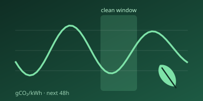
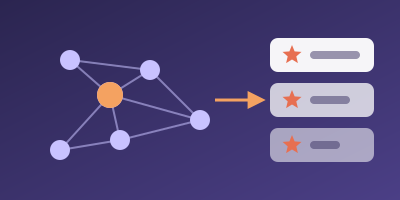
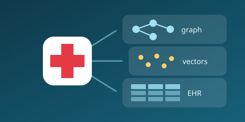
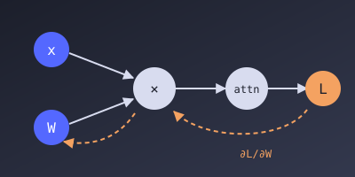
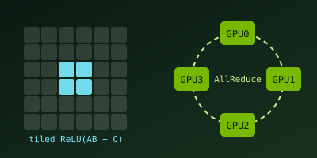

2nd Place, Cloud Track at DataHacks 2026. A carbon-aware ML copilot that reads training scripts, estimates compute and CO₂ cost from published scaling laws, and suggests greener models via RAG. Built on Claude via MCP, Databricks DLT, Snowflake, and SageMaker.

Top-N ranking on Epinions (664K+ reviews, 49K users) at 99.99% sparsity using social trust-graph features. Beat a published IJCAI 2017 baseline by 6% AUC; deployed with FastAPI and Docker on Hugging Face Spaces (live demo).

Drug safety and recommendation system combining graph queries in Neo4j, vector search over FAERS adverse events in Qdrant, and relational EHR records in PostgreSQL, with ETL from Synthea synthetic data.
Autodiff Engine and Transformer

A custom automatic differentiation engine written from scratch, without PyTorch autograd, used to train a decoder-only Transformer with causal self-attention and autoregressive decoding.
GPU Kernels and Distributed Training

A fused Triton kernel for ReLU(AB + C) with shared-memory tiling and tuning, plus distributed Transformer training from scratch with MPI: AllReduce, AllToAll, data and tensor parallelism.
Emotion-driven game discovery: LLaMA 3 extracts 9-dimensional emotion vectors from Steam reviews, a Thompson sampling bandit personalizes picks, and Kafka streaming supports continual learning.